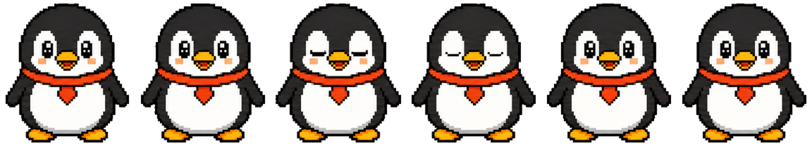

准备一个新朋友
一个宠物就是一个文件夹。文件夹的名字，也是它在宠物菜单里的名字。准备好下面两份文件，就可以开始了。
- 1
画好每一帧
把动作按顺序排成序列图，每帧大小一致，推荐使用透明背景。
- 2
写一份配置
用 config.json 告诉 Wi-Fi 每帧多大、动作在哪一行、播放多快。
- 3
放入并选择
放进自定义宠物目录，重新打开宠物菜单，选择你的角色。
给它一个小家
在当前账号的 pets/custom/ 目录里，新建一个以宠物名字命名的文件夹。
macOS
~/Library/Application Support/com.wangyifang.Wi-Fi/<账号>/pets/custom/Windows
%LOCALAPPDATA%\com.wangyifang.Wi-Fi\<账号>\pets\custom\<账号> 指当前 Steam 账号的数字目录；未连接 Steam 时为 local。macOS 可在访达按 ⌘ ⇧ G 前往路径，Windows 可在文件资源管理器地址栏输入路径。
我的宠物/ ├── spritesheet.png └── config.json
spritesheet 一致。让角色动起来
先从一行动画开始：下面的企鹅有 6 帧，每帧 192×208 像素，所以整张序列图是 1152×208 像素。

将下面的内容保存为 config.json，和对应的序列图放在一起。换成自己的素材时，记得修改帧尺寸和帧数。
{
"spritesheet": "spritesheet.png",
"frame": { "width": 192, "height": 208 },
"scale": 0.5,
"fps": 6,
"animations": {
"default": { "row": 1, "frames": 6, "fps": 6, "mode": "once" }
}
}| frame | 单帧宽高，不是整张序列图的宽高。 |
|---|---|
| scale | 桌面显示比例。0.5 表示按单帧尺寸的一半显示。 |
| row / frames | 动画所在行与这一行使用的帧数。行号从 1 开始。 |
| fps / mode | 每秒播放多少帧。once 播放一次；loop 循环到状态切换。 |
多一些动作
在序列图增加新的一行，就可以为 hover、dragLeft、dragRight 配置不同动作。上面的最小示例中，未单独配置的状态也会使用这一行动画。
换好后，再打开菜单
保存文件后，重新打开宠物菜单，让 Wi-Fi 重新扫描，再选择你的宠物。每次修改都可以这样预览。
遇到一点小问题
菜单里没有出现我的宠物？
先确认放在了当前账号的 pets/custom/我的宠物/ 中，再检查图片文件名与配置是否一致、JSON 是否有效。最后重新打开宠物菜单。
角色被切开，或者动作跳来跳去？
检查 frame.width、frame.height 是否为单帧尺寸，row、frames 是否与序列图对应。每一帧中的角色位置也应保持一致。
可以省略 config.json 吗？
只有素材恰好符合内置默认布局时才适用。制作自己的角色时，建议保留配置，明确填写帧尺寸和动画布局。
为什么有一块背景，或者鼠标命中区域不合适？
导出图片时保留透明通道，不要把棋盘格画进图片。需要更精细的鼠标命中范围时，可在配置中用 interaction.hitMaskRow 指定专用命中行。